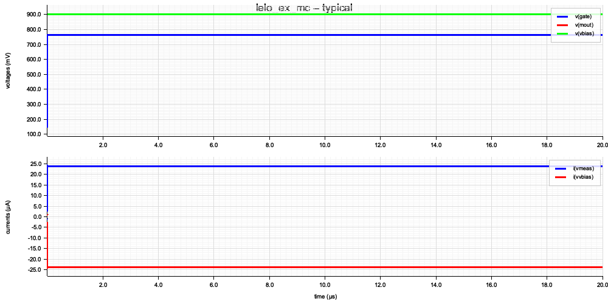

| name | measured | min | typ | max | Δ vs typ | position |
|---|---|---|---|---|---|---|
| ibn | 23.704 µA | 15.000 µA | 23.500 µA | 30.000 µA | +0.9% | |
| vgs_m1 | 763.184 mV | 400.000 mV | 760.000 mV | 1.100 V | +0.4% |
| name | result |
|---|---|
| ibn | 23.704 µA |
| vgs_m1 | 763.184 mV |

* sky130A LELO_EX 1:4 NMOS current mirror .lib '/Users/macmini/.volare/volare/sky130/versions/c6d73a35f524070e85faff4a6a9eef49553ebc2b/sky130A/libs.tech/ngspice/sky130.lib.spice' tt Vvbias vbias 0 DC 9.0000000000e-1 Iref 0 gate DC 5.0000000000e-6 XM1 gate gate 0 0 sky130_fd_pr__nfet_01v8 W=2 L=2 XM2 mout gate 0 0 sky130_fd_pr__nfet_01v8 W=8 L=2 Vmeas vbias mout DC 0 .ic v(gate)=0 v(mout)=0 .options temp=27 .control set ngbehavior=hsa tran 1.0000000000e-7 2.0000000000e-5 uic meas tran ibn find i(vmeas) at=20u print ibn meas tran vgs_m1 find v(gate) at=20u print vgs_m1 .endc .end
Note: Compatibility modes selected: hs a Circuit: * sky130a lelo_ex 1:4 nmos current mirror option SCALE: Scale is set to 1e-06 for instance and model parameters Doing analysis at TEMP = 27.000000 and TNOM = 27.000000 Using SPARSE 1.3 as Direct Linear Solver Operating point simulation skipped by 'uic', now using transient initial conditions. Reference value : 1.00000e-09 No. of Data Rows : 218 ibn = 2.37041e-05 ibn = 2.370407e-05 vgs_m1 = 7.63184e-01 vgs_m1 = 7.631839e-01 binary raw file "/Users/Shared/rlx-eda/crates/spike-lelo-ex/docs/sky130a_mc/lelo_ex_typical.raw" Note: Simulation executed from .control section
{kind=link}